SOMOS
2020
UTDT
DISEÑO GRÁFICO
Luego de un análisis de algunas de las películas mas conocidas de famoso director de cine Martin Scorsese, realicé la gráfica de un evento tributo a sus historias, en la simulación de un ciclo de cine. Somos es el festival que trae una nueva vision moderna de las películas del director desde la mirada de la mujer; esde la gráfica de promoción y la ambientación del día del evento, hasta el merchandising y los recuerdos post evento.
WEB Y APP
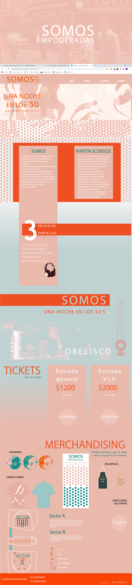
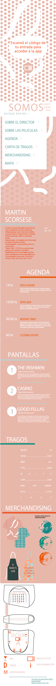
FLYERS PRE EVENTO
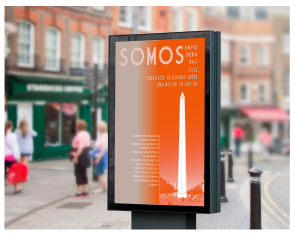
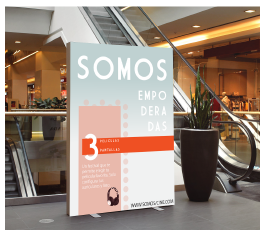
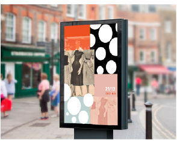
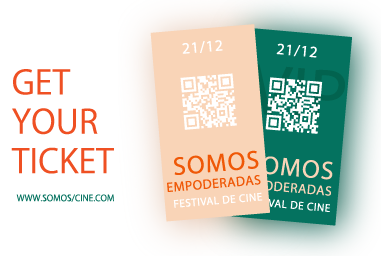
TICKETS
STORIES

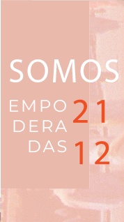
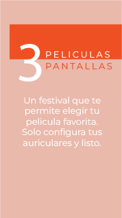
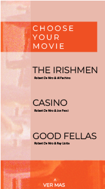
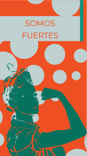
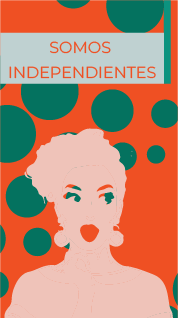
Proyecto individual realizado para una entrega en la Universidad Torcuato Di Tella en la materia Laboratorio de Diseño II.